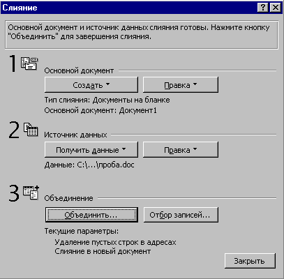
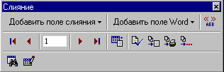

6.3 Создание основного документа
- Чтобы создать документ на бланке на основе уже
имеющегося документа, откройте этот документ.
Чтобы создать новый документ, выберите команду Создать
в меню Файл, а затем выберите нужный шаблон.
- В основном документе введите текст, который
должен присутствовать в каждом документе на
бланке.
- В меню Сервис выберите команду Слияние.
Появится диалоговое окно "Слияние".
- Нажмите кнопку Создать, выберите команду Документы
на бланке, а затем нажмите кнопку Активное
окно. Активный документ станет основным
документом слияния.
- Нажмите кнопку Получить данные.
- Чтобы воспользоваться готовым списком
документа Word или рабочего листа (как это было
описано выше), базой данных или другим списком,
выберите команду Открыть источник данных.
- Чтобы создать в Word новый список имен и адресов,
выберите команду Создать источник данных, а
затем определите структуру записи данных.
- Чтобы использовать адреса электронной адресной
книги, выберите команду Использовать адресную
книгу.

- Поместите курсор туда, где следует расположить
имя, адрес и другие переменные данные. На панели
инструментов Слияние нажмите кнопку Добавить
поле слияния, а затем выберите нужное имя поля.

- После того, как в основной документ будут
введены все поля слияния, нажмите кнопку Слияние
в новый документ
.
Назад | Содержание
| Вперед